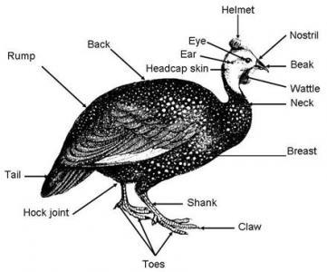

GUINEAFOWLS
Guinea fowl are typically raised for meat. They can also be kept as guard
animals since they are very vocal when anything new enters the farm yard.
Guinea fowl have also been used as a natural method for controlling ticks,
especially in areas where Lyme disease is a problem.
Vocabulary
Guinea fowl is both singular and plural. 'Gunea fowl' is the correct
name for the species though they are frequently referred to as 'guinea
hens', which would be only the females of hte species.
Guinea hen = adult female guinea fowl
Guinea pullet = female guinea fowl under one year of age
Guinea cock = adult male guinea fowl
Guinea cockerel = male guinea fowl under one year of age
Keet = young (baby) guinea fowl
